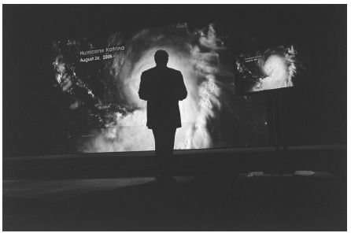

动物是纪录片制作人最早的拍摄对象之一——可爱的宠物、死亡的猎物、奇异的生物。随着纪录片商业价值的增加，动物的商业价值也增加了，因为它们比演员便宜。自然纪录片也叫环境纪录片、环保主义者纪录片或野生动物纪录片，目前是纪录片的一个重要分支、一个稳定的电视节目类型，也是一个充满活力的纪录片种类。虽然初看之下自然纪录片表达方式直接，意识形态中立，但实际上它暴露了我们对于自己和环境的关系的种种主观臆断。
教育式娱乐
促使早期的自然纪录片诞生的是两种看似完全相反的目的：科学和娱乐。随着时间的推移，这两种驱动力渐渐融为一体，成为一种模棱两可的功能：娱乐式的教育。
19世纪末，有关摄影技术的实验——如一位法国生理学家发明了记录鸟类飞行的方法——推动了电影的诞生。科学家将影片作为客观记录观察结果的手段，但他们不可避免地对自己的影片进行了编辑和包装（而其他科学家并不一定都能识破），从而减弱了其纯粹观察的特征；不仅如此，他们还将科学观察的视觉效果放在首要位置。更多大众化的纪录片则普及了科学知识，如《自然的秘密》是一部早期的英国系列纪录短片，在1922到1933年间播出，是后来自然纪录片的先驱之作。
同时，之前用幻灯片形式展示旅行风光或游猎探险的娱乐投资商，也将电影作为他们下一步的目标。《猎捕白熊》（1903）就是最早的此类纪录片之一，催生了此后一系列的追逐片。一些游猎者带上自己的私人摄影师随行，就是为了记录战利品。英国摄影师谢里·基尔顿拍摄了西奥多·罗斯福的非洲游猎之行，取名《罗斯福在非洲》（1910），这部纪录片也主要展示了战利品，但观众更喜欢的却是动作片。可想而知，纪录片制作人会开始假造或搬演某些场景，或者宰杀动物，来制作电影脚本。（如果想了解对早期旅行纪录片的批评，可以参看1986年的汇编纪录片《从极点到赤道》，这部电影将游猎纪录片和其他侵略扩张题材的影片联系起来。）在《北方的纳努克》和《变迁》取得佳绩之后，马丁·约翰逊和奥萨·约翰逊夫妇开创了一种成功的自然纪录片商业生产模式，比如在冒险服饰上加入商业广告的元素。财大气粗的赞助商为约翰逊夫妇为期四年的非洲之行出资，成就了他们的影片《辛巴》（1928）。影片中，约翰逊夫妇向观众展示了他们在“湖畔天堂”过着简单质朴的、前工业时代的生活。他们给影片中出现的动物都起了名字，比如那头高贵的狮子“辛巴”——镜头中的非洲人也成了带有喜剧色彩的野生动物。《辛巴》的票房相当可观，其成功也启发了后来者制作了更多成本更为低廉的纪录片。
观看危险动物所带来的刺激一直延续着。史蒂夫·欧文的《鳄鱼猎手》电视纪录片系列引起了全球轰动，其影响一直持续到他2006年去世。片子的成功很大程度上源自他的冒险。
与充满暴力的丛林游猎类纪录片相反的，是表现自然的优美与平衡的纪录片。在这类纪录片当中，人类是危险的入侵者。瑞典制作人阿尔内·苏克斯多夫的抒情风格自然纪录片在全球热映，是此类纪录片的代表与精华。他最著名的长纪录片《伟大的历险》（1953）以一个小男孩的视角抒情地看待自然。苏克斯多夫的作品也催生了不少田园诗纪录片，其中最著名的也许是乔治·鲁基耶的《法尔比克》（1946），该片记录了一个法国农场里的一年四季。
迪士尼自然纪录片
沃尔特·迪士尼工作室综合了危险、高贵的野蛮人和尊严等元素，制作了具有开创性的“真实世界历险”系列纪录片，1948年的奥斯卡获奖短片《海豹岛》是其中的第一部。这些影片最初找不到放映商，迪士尼公司不得不开设了自己的“博伟影视工作室”，最后它们却上了电视。这一系列影片很快在全世界热映，并获得巨大的经济收益。事实上，迪士尼工作室的高价动画片在影院以惨淡票房收场之后，很可能就是这一系列片将迪士尼工作室从失败的命运中解救了出来。
这些影片中都运用了戏剧性的叙事方式，背后的观点是弱肉强食的达尔文主义。不过，死亡的景象却经过小心的处理以照顾一般观众的感受，而死亡往往也是有某种意义的。《海豹岛》中没有提及海牛常常会不小心踩踏小牛的事实。
“真实世界历险”中的剧情片——其中第一部是《沙漠奇观》（1953）——采用了故事片的技法。广阔的、激动人心的宽银幕全景让人心生敬畏，精妙的节奏给观众以悬念，而配乐则时而庄严，时而诙谐。
这些影片中没有人类，但动物们却以一种古怪的方式扮演起了人类，就像一个战后郊区的美国小家庭——爱护孩子的母亲、忧心忡忡的父亲、喧闹的孩子们。
“真实世界历险”系列片中的时空和观众所处的时空很巧妙地没有交集，所有人类的痕迹都被细心地抹去。摄影师遵照要求，将拍摄地点选在几乎没有人类文明痕迹的地方。《原野奇观》（1954）用旁白告诉观众，片子要带他们去一个地方，那里“历史从未有人记录或见证，只有自然主宰着草原王国”。
蓝筹和巨幕电影
受“真实世界历险记”系列的影响，人们开始制作长期全球播放的纪录片系列，如英国的《自然》（1982）。所谓的“蓝筹”纪录片 [28] 成为全球电视纪录片生产的主要模式。这类纪录片的特点是主要拍摄大型动物，影片中没有人类或人类影响的痕迹，采取侧重繁殖与捕猎（即性和暴力）的戏剧性叙事。英国广播公司和探索频道于2001年推出的《蓝色星球》系列，就是很好的蓝筹纪录片。这一激动人心的系列片中到处都是技术的奇迹与自然的奇观，它带人们探索了全球的海洋世界，同时又不让观众察觉到人类的行为会改变片中拍摄的奇妙动物的生存环境。
大画幅的巨幕影片要依靠蓝筹的投入，来把观众从博物馆和各种比赛赛场拉到影院，观看大银幕上制造的奇观。昆虫（3D影片《热带雨林里的昆虫》，2003）、大型动物（《海豚》，2000）和大量的鲨鱼纪录片都让观众沉浸在几乎没有人类干扰痕迹的自然奇观中。21世纪初，院线纪录片越来越流行，也是由于蓝筹自然情节剧纪录片的推动。在法国导演雅克·佩兰执导的《迁徙的鸟》（2001）中，观众看到了鸟类在季节迁徙中起飞、飞行、降落的令人惊叹的特写镜头。但制作团队根本没有去拍摄大自然中的鸟类，实际上，他们自己养大了这些鸟，这样它们面对笨重的拍摄机器时才不会害怕。另一部法国片，吕克·雅凯的《帝企鹅日记》（2005）在全球热映，记录了企鹅一年四季在南极的严酷环境下为了繁育后代而进行的斗争。影片运用了爱情故事主题，策略性地回避了关于企鹅的一些基本事实，比如它们的交配只持续一季，影片同样没有涉及全球变暖会威胁企鹅生存的问题。
环境纪录片
真实世界历险纪录片推出的同时，致力于生态保护的环境运动也开始开展。20世纪50年代的电视纪录片系列《地球的生命》，在英国“环境保护组织”的支持下，深入到中小学教育市场。这些纪录片强调人类行为对于自然平衡的影响。随着人们环境意识的增强，此类主题变得越来越普遍。尽管如此，即使是环保主义的节目制作也经过了非常多的加工。此类节目大都采取现实主义的视角来描述它们所要呈现的关系，采用策略性的搬演、省略剪辑和剧本来讲述故事：单个动物的画面有可能是由几个动物的镜头拼凑起来的；动物的某些动作是被人类激怒出来的，激怒动物的目的在于获得刺激的镜头；大部分拍摄鲨鱼的纪录片都需要戏弄鲨鱼，以获得动作镜头。许多自然纪录片都将制作人的痕迹减到最小或者完全抹去；另一些纪录片则是将制作人展现为英勇的新游猎领袖，英国广播公司的《狮虎豹》系列便是如此。
但是，一些独立的纪录片制作人却激发观众思考自己与动物和自然环境的关系。旅居海外的澳大利亚人马克·刘易斯制作了不少关于人与动物的纪录片，这些片子都让人惊奇，而且非常有趣，他由此扬名。《甘蔗蟾蜍》（1988）以残酷的黑色幽默审视了将甘蔗蟾蜍引入澳大利亚的后果：当初进口这种毒蟾蜍是为了消灭一种甲虫，但它不但对这种甲虫毫无效果，还成了一种肆虐的害虫。刘易斯的《老鼠》（1998）和《鸡的自然史》（2000）这两部片子记录了人们与其过于亲密的驯养动物之间古怪的、令人作呕的、不正常的关系。维尔纳·赫尔佐克的《灰熊人》（2005）则展示了蒂莫西·特雷德韦尔的悲惨结局：他是一个精神不正常的纪录片人，生活在熊的国度，误将熊当作自己的朋友，最后被一只熊吃掉。片中赫尔佐克突出了他本人的虚无主义以及自然在本质上是残酷的观点，这和特雷德韦尔弄巧成拙的多愁善感形成了鲜明对比；赫尔佐克表现了特雷德韦尔身上的自恋情结，这和他本人颇为类似；他还努力使镜头中的熊比片中的任何人看起来都更高尚。
有史以来最成功的院线纪录片中，有一部可以被认为是自然纪录片：戴维斯·古根海姆的《难以忽视的真相》（2006）。镜头中美国前副总统阿尔·戈尔利用生动的图片给观众讲解了全球变暖的问题，让观众感受了一个关于自然灾害的故事。戈尔在讲座中运用了冰块融化的生动图像、水位上升淹没曼哈顿的情景模拟、一头正在淹死的北极熊的动画，以及让人震惊的图表，向人们说明解决这一问题已迫在眉睫。片中也插入了戈尔个人的记忆——父亲的农场、家乡的河流、一场几乎夺去他儿子性命的事故、他姐姐的死亡。他坦言自己无法说服政客们对全球变暖采取行动，声称他们需要听取选民的意见。科学的数据、美好的自然风光、触目惊心的灾难画面和个人的转变，都是为了为最后的好消息作铺垫：人类行动能够拯救我们的地球 。
这一类影片和游猎纪录片及迪士尼传统的自然纪录片截然不同，因为它们主动表现人类的行动和人类与自然的互动——不仅有与动物的互动，也有与我们赖以生存的生态系统的互动。
这些纪录片让我们看到了在很多自然节目和电影当中看不到的东西，也为我们以新的方法展现关于环境的故事提供了模型。

图13 纪录片《难以忽视的真相》中，戈尔让全球变暖成为公众关注的话题，也让环境纪录片有了新的高度。戴维斯·古根海姆导演，2006年
意义与伦理
很多外界批评都将焦点对准了拍摄大型动物的热映电影和电视纪录片（如英国广播公司的《狮虎豹》和探索频道的《鲨鱼》）。它们针对对待动物的方式、展现的准确程度和叙事的把握等问题提出了疑问。德里克·鲍谢认为，野生动物纪录片加工的成分太多，简直成了故事片。格雷格·米特曼则认为自然纪录片在再现现实方面的挑战，并不比其他形式的纪录片遇到的挑战更复杂。
大部分热映的自然纪录片是否有正面的教育价值？对此评论家们也提出了质疑。毫无疑问，观众很容易注意不到影片中的环保主义信息。史蒂夫·欧文是一位一直大声疾呼环保的人士，但他后来被一条黄貂鱼刺死之后，他的支持者们却在澳大利亚海岸沿线捕杀、肢解黄貂鱼。比尔·麦吉本批评道：当纪录片放出濒危动物的特写镜头时，它们实际上传达了相反的信息——还有这么多的猎豹，快看！这些纪录片还让人觉得，动物在自然栖居环境下永远都是活蹦乱跳的。资深的蓝筹纪录片制作人戴维·阿滕伯勒曾说过：“如果电视节目中的丛林太平无事，你才不会打开电视去看它。”这些节目只真正关心地球动物生活中的一小部分——往往是大型哺乳动物。麦吉本认为：“现在电视上的自然教育纪录片让人们过于偏爱某些物种，而对生态系统或者毁灭这些生态系统的政策极度缺乏了解。”
全球变暖危机或许会激发自然纪录片的一个新趋势，即不再仅仅聚焦于动物，而是也将目光对准维系生命的生态系统以及人类对这一系统的破坏。这一领域已经有了很大的进展。毫无疑问，早期自然纪录片漫不经心的冷酷和虚假，放在现在会很让人厌恶。
随着电视的疆域不断拓展，自然纪录片也不断走入全新的频道，发展出新的种类。不管是否有意为之，它们将继续记录我们与环境的关系。这一纪录片类型的健康发展，现在已经与全球生态系统的健康休戚相关。